Data Visualization with ggplot2
Introduction
In today’s lab, we introduce a popular package called ggplot2 used for data visualization. This package is contained within the tidyverse package (already installed) so we do not need to install it separately. The term ggplot stands for “Grammar of Graphics Plot” which is a system for declaratively creating graphics. It provides a programmatic interface for specifying what variables to plot, how they are displayed, and general visual properties. The package allows users to create a wide variety of high-quality and customizable statistical graphs, making it a valuable tool for data exploration and presentation.
Creating your Quarto File
To create your quarto file, follow the following steps:
Go to File>New File > Quarto document. In the title field use
Introducing ggplot2then write your name under theAuthorfield. Change the output option topdf.Next, save the document as
Lab_04. If you did it correctly, the fileLab_04.qmdshould appear under the files section with a.qmdextension.
Packages
We will need the following packages in today’s lab:
- openintro: contains some of the data sets that we will use.
-
tidyverse: contains the
ggplot2package.
Create a code chunk and load the following packages using the code below. Be sure to hit the green button to run the packages.
library(openintro)
library(tidyverse)Loading the Data
We will need the following data sets: duke_forest and sinusitis both contained in the openintro package. Load the data sets using the commands below:
Before you proceed, examine these data to understand their context. You may run the command ?duke_forest and ?sinusitis to learn more about the data sets.
Visualizing Numerical Data
One Numerical Variable
When we have a single numerical variable, we can use tools such as dot plots, histograms, and box plots to visualize the distribution of the variable.
Dot Plot
There are three basic steps in creating visualizations using the ggplot2() function. This function can take several arguments. The three basic steps are:
- Step 1: Add the data argument. Create a new code chunk and run the code below. What do you notice?
Code
ggplot(data = duke_forest)
- Step 2: Add a mapping argument. This step defines how variables should be mapped on the axes. Since we are dealing with one variable here (price), we will just use the \(x-axis\). See code below:
Code
ggplot(data = duke_forest,
mapping = aes(x = price)
)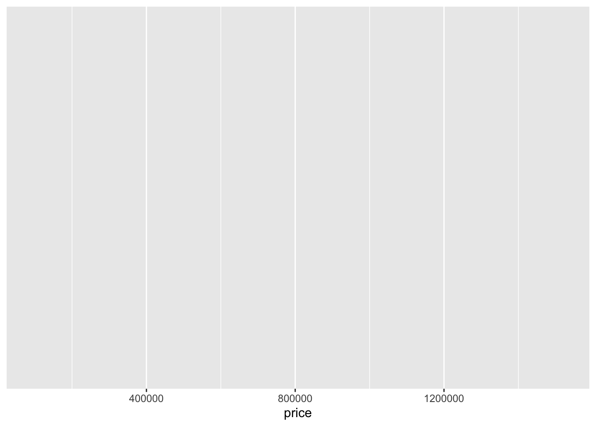
-
Step 3: Define the visual properties. To define the visual properties, we use the
geom_**(short form for geometry) function. In our case, we want to use dotplot and so we add the functiongeom_dotplot(). Notice that you must have the parentheses because this is a function that can take more arguments (you will learn more about this) to further define the nature of the dots added.
Code
ggplot(data = duke_forest,
mapping = aes(x = price)
) +
geom_dotplot()Bin width defaults to 1/30 of the range of the data. Pick better value with
`binwidth`.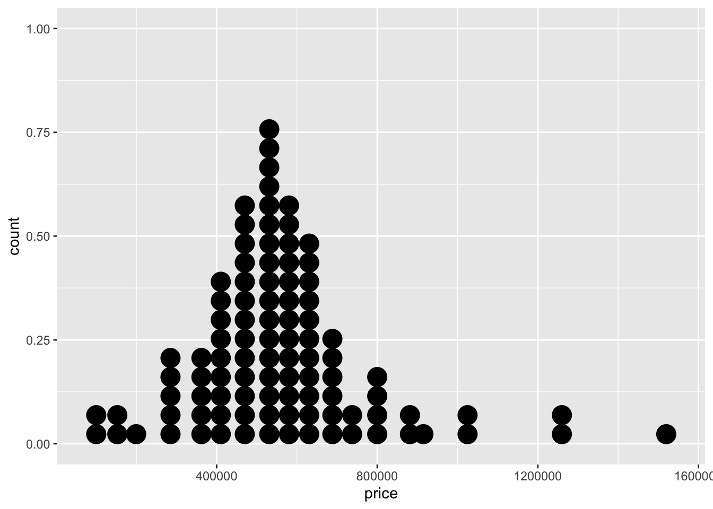
We can further customize the dots by adding arguments inside the geom_dotplot() function. For example, we can use a blue color for the dots and fill them in using orange color as shown below:
Code
ggplot(data = duke_forest,
mapping = aes(x = price)
) +
geom_dotplot(color = "blue", fill = "orange")Bin width defaults to 1/30 of the range of the data. Pick better value with
`binwidth`.
We can also change the size of dots by adding the argument dotsize. For example, we can set the size of the dots to 0.5 as shown below:
Code
ggplot(data = duke_forest,
mapping = aes(x = price)
) +
geom_dotplot(color = "blue", fill = "orange", dotsize = 0.5)Bin width defaults to 1/30 of the range of the data. Pick better value with
`binwidth`.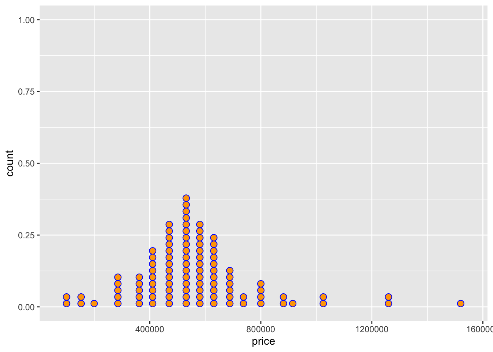
We can also change the appearance of the canvas by changing the theme. The most commonly used theme is the minimal theme. To add this theme, just add the theme_minimal() function. This will remove the gray background and gridlines. See below:
Code
ggplot(data = duke_forest,
mapping = aes(x = price)
) +
geom_dotplot(color = "blue", fill = "orange", dotsize = 0.5) +
theme_minimal()Bin width defaults to 1/30 of the range of the data. Pick better value with
`binwidth`.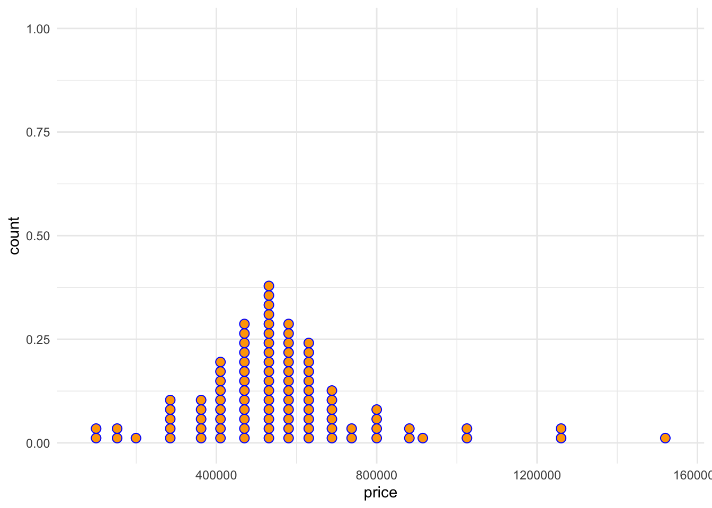
Histogram
Another tool we can use to visualize the distribution of a single numerical variable is a histogram. To create a histogram for the price variable, we follow the exact same steps as above but only change the geom_dotplot part to geom_histogram. See below:
Code
ggplot(data=duke_forest,
mapping = aes(x = price)
) +
geom_histogram()`stat_bin()` using `bins = 30`. Pick better value with `binwidth`.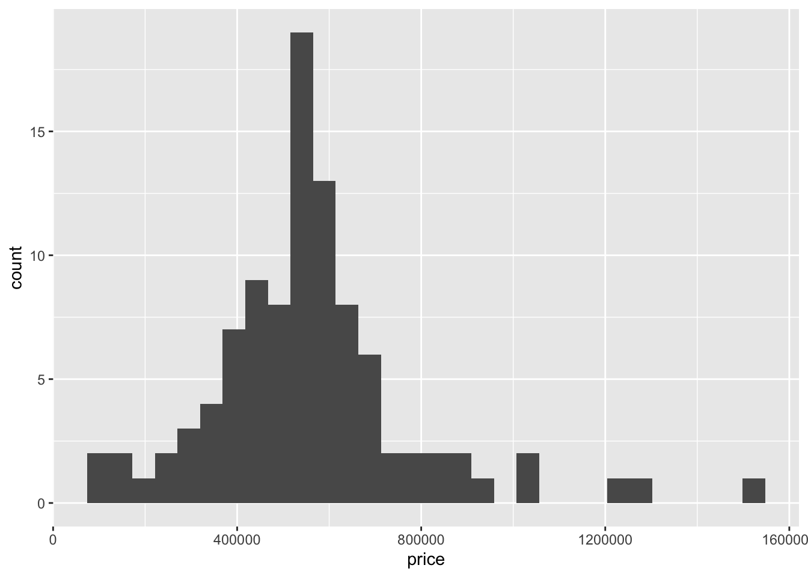
We can further customize the histogram by adding arguments inside the geom_histogram() function. For example, we can change the color of the bars to blue and fill them in using ornage color as shown below:
Code
ggplot(data=duke_forest,
mapping = aes(x = price)
) +
geom_histogram(color = "blue", fill = "orange")`stat_bin()` using `bins = 30`. Pick better value with `binwidth`.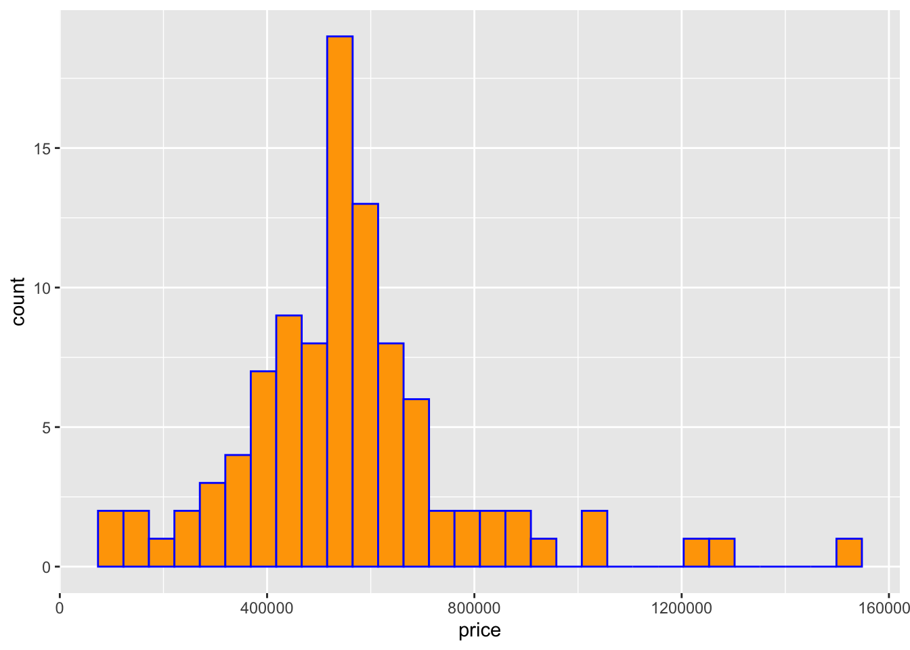
You can also change the binwidth of the histogram by adding the argument binwidth. For example, we can set the binwidth to 100,000 as shown below. Notice that we do not have a comma in the number 100 000.
Code
ggplot(data=duke_forest,
mapping = aes(x = price)
) +
geom_histogram(color = "blue", fill = "orange", binwidth = 100000)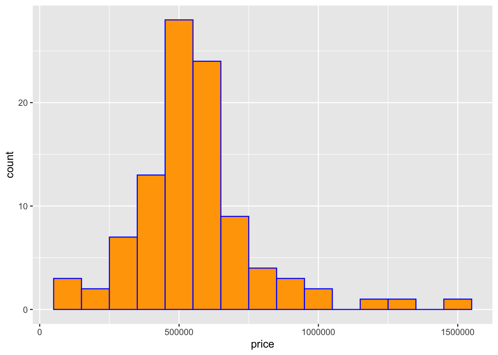
Boxplot
We can also create a boxplot in the same way but change the geometry to geom_boxplot. See below:
Code
ggplot(data = duke_forest,
mapping = aes(x=price)
) +
geom_boxplot()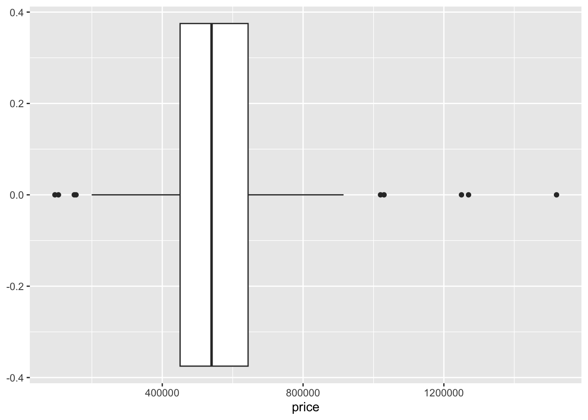
We can further customize the boxplot by adding arguments inside the geom_boxplot() function. For example, we can change the color of the lines to blue and fill in the box using orange color as shown below:
Code
ggplot(data = duke_forest,
mapping = aes(x=price)
) +
geom_boxplot(color = "blue", fill = "orange")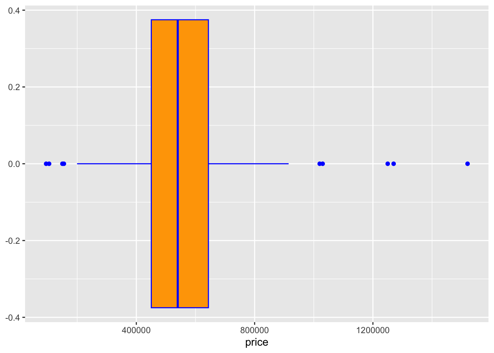
Question:
- By examining the tools created above, how would you describe the distribution of the prices? What is the advantage of dot plot over the histogram? What about the box plot over the histogram?
Two Numerical Variables
Scatter Plots
In many cases, we want to assess relationships between two numerical variables. A scatter plot is the most commonly used visualization tool for this. To create a scatter plot, you just need to specify the variable on the \(x-axis\) and the one on the \(y-axis\). In addition, you will use geom_point as the geometry.
Suppose we want to assess the association between price and area. Use the code below:
Code
ggplot(data = duke_forest,
mapping = aes(x = area, y = price)
) +
geom_point()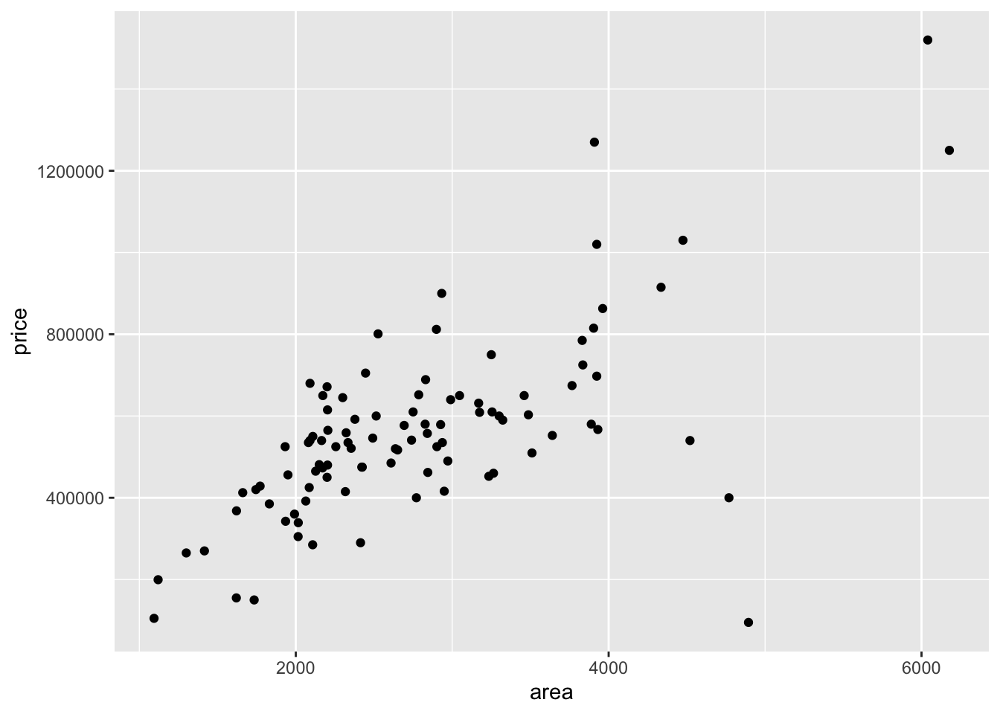
Question - What pattern do you notice from the above scatter plot? Is this what you expected?
You can add some layer of complexity to the scatter plot to allow you compare three variables. For example, you may want to compare the relationship between price and area by cooling. To do this, you use the color argument as shown below:
Code
ggplot(data = duke_forest,
mapping = aes(x=area, y = price, color = cooling)
) +
geom_point()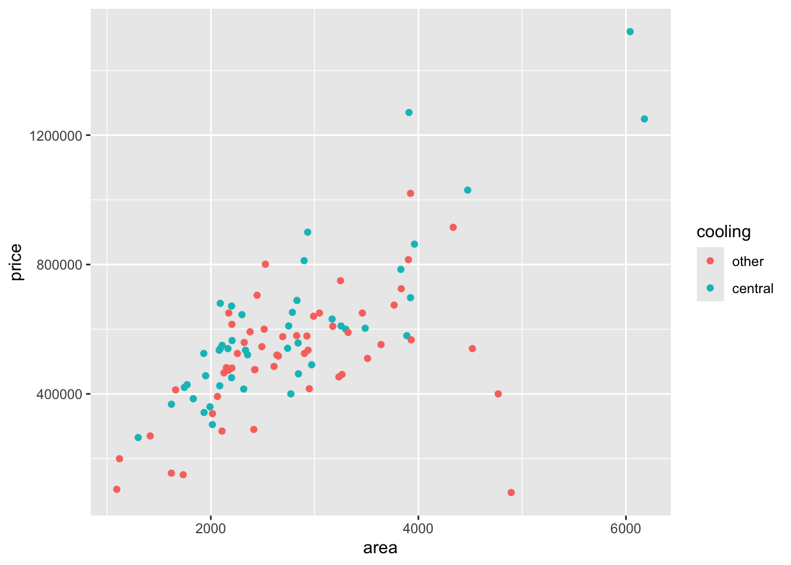
Question - What patterns do you notice above? What can you say about the relationship between price and area by cooling?
Visualizing Categorical Data
Single categorical Variable
You can visualize a single categorical variable using tools such as simple bar plots and pie charts. However, pie charts are not recommended because they are not easy to interpret, especially when the frequencies are close. We will focus on bar plots.
Simple Bar Plots
The data set sinusitis contains two categorical variables (group and self_reported_improvement). Suppose we want to visualize the distribution of cases by self_reported_improvement. We follow the same structure as above but change the geom() part to geom_bar(). See code below:
Code
ggplot(data = sinusitis,
mapping = aes(x = self_reported_improvement)
) +
geom_bar()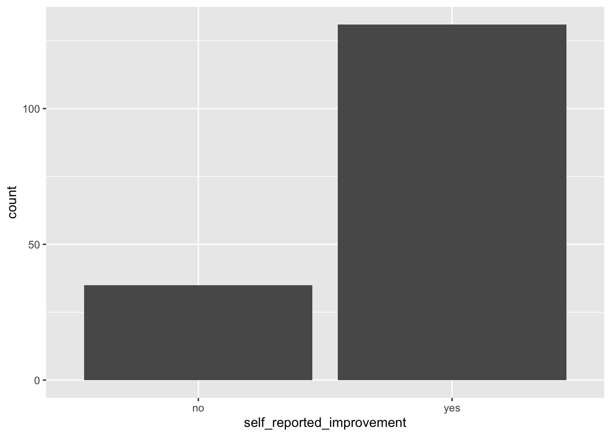
You may want to color the bars so that each category shows a different color. You can do this by using adding the argument fill= in the aes. This will automatically fill the bars using some colors. See below:
Code
ggplot(data = sinusitis,
mapping = aes(x = self_reported_improvement, fill = self_reported_improvement)
) +
geom_bar()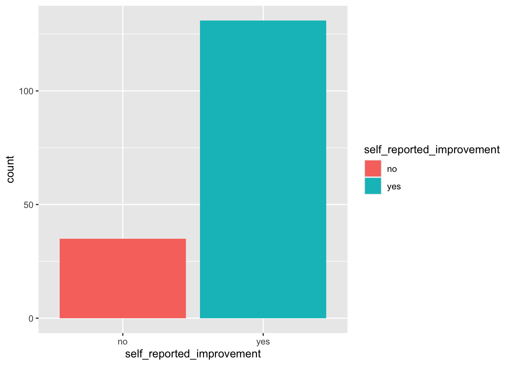
Pie Chart
A pie chart can be seen as a special type of bar plot. Let us create a pie chart to visualize the distribution of the self_reported_improvement variable in the sinusitis data set. Study the code below:
Code
ggplot(sinusitis %>% count(self_reported_improvement), aes(x = "", y = n, fill = self_reported_improvement)) +
geom_bar(stat = "identity") +
coord_polar(theta = "y") +
labs(title = "Distribution of Groups in Sinusitis Dataset", fill = "Group") +
theme_void()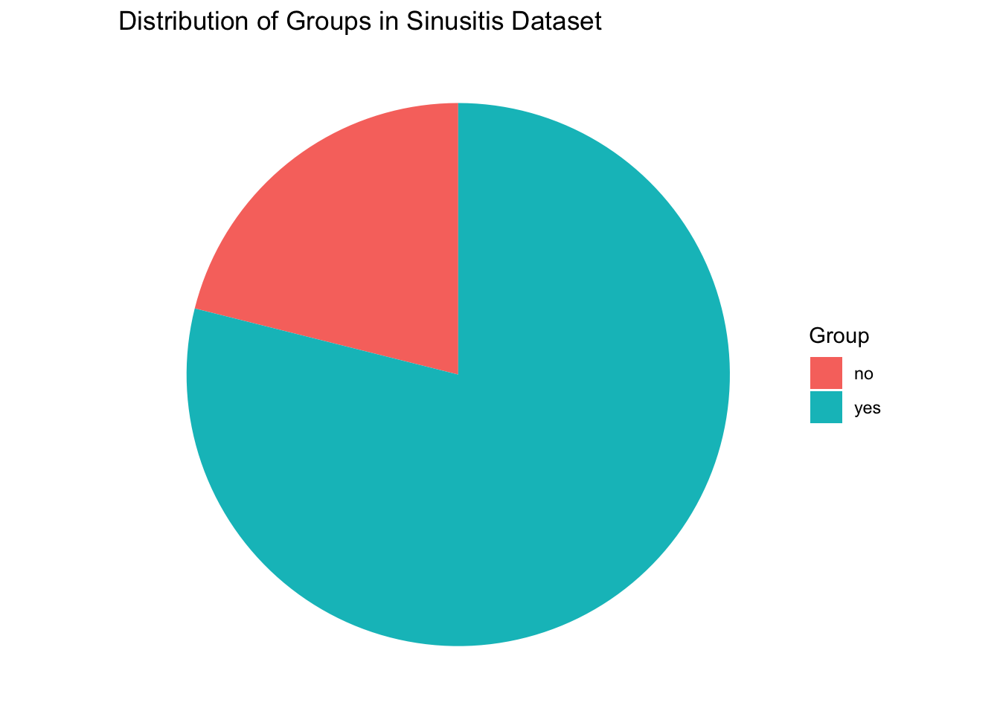
Two Categorical Variables
We can use stacked bar plots or side-by-side bar plots to visualize two categorical variables. For example, we may want to visualize the relationship between group and self_reported_improvement from the sinuisitis data set.
Stacked Bar Plots
When you have multiple categorical variables, a stacked bar plot can be a nice way to visualize the relationship between them. For example, we can visualize the relationship between self_reported_improvement and group by simply using the second variable (in this case group) in the fill argument inside the aes(). See below:
Code
ggplot(data=sinusitis,
mapping = aes(x = self_reported_improvement, fill = group)
) +
geom_bar()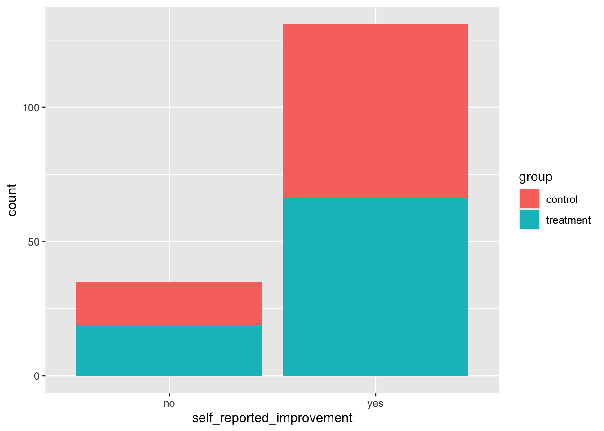
As you can see, stacked bar plots are not easy to interpret. If the bars are placed side-by-side, it becomes easier to interpret.
Side-by-side Bar plots
To create a side-by-side by plot, we simply add the argument position=dodge in the geom() function. See below:
Code
ggplot(data = sinusitis,
mapping = aes(x = self_reported_improvement, fill = group)
) +
geom_bar(position = "dodge")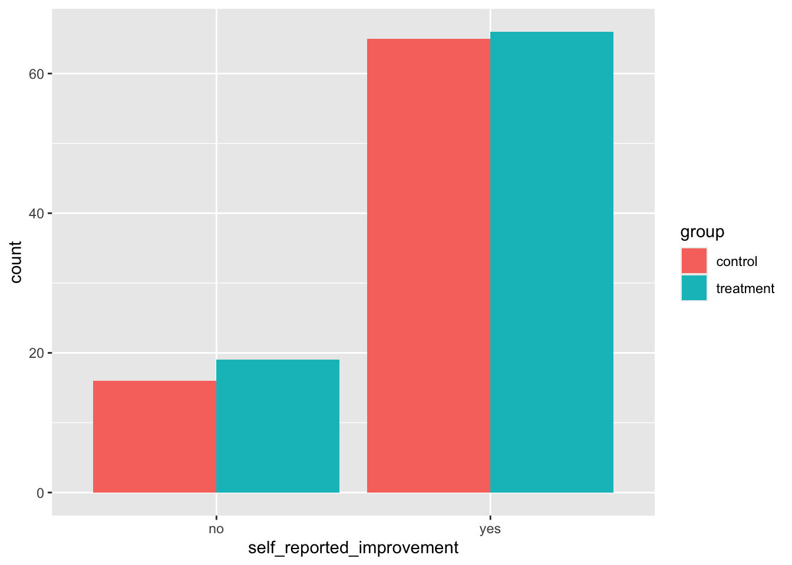
Numerical variable by Category
It is common to find bar plots that compare a numerical variable across levels of a categorical variable using a specified summary statistic such as the mean or the raw scores. For example, if you wanted to visualize the mean price across the type of cooling for the houses in the duke_forest data set, we can do this by declaring a statistic inside the geom_bar() as shown below:
Code
ggplot(duke_forest, aes(x = cooling, y = price/1000, fill=cooling)) +
geom_bar(stat = "summary", fun="mean") +
labs(x = "Type of Cooling",
y = "Average House Price in thousands",
title = "Bar Plot for Average price by Type of Cooling")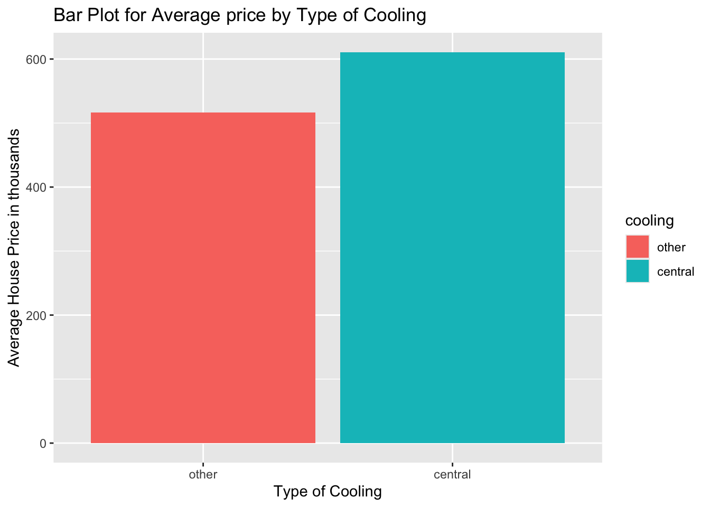
We can also visualize the distribution of the price variable across the cooling without summarizing the price variable. To achieve this, we can use a side-by-side box plot. See below:
Code
ggplot(data = duke_forest,
mapping = aes(x = cooling, y = price/1000, fill = cooling)
) +
geom_boxplot(position = "dodge") +
labs(x = "Type of Cooling",
y = "House Price in thousands",
title = "Box Plot for House Price by Type of Cooling")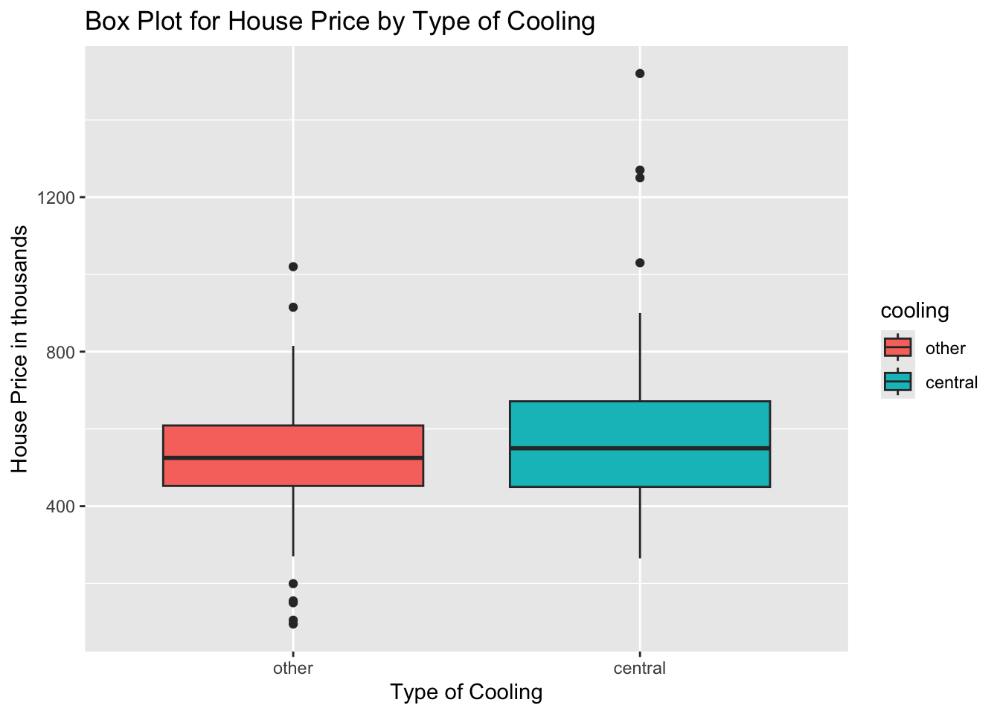
We can also create density plots to visualize the distribution of the price variable by cooling. To do this, we use the geom_density() function. Study the code below before running it. Change the value of the alpha argument to 0.9 to see what happens.
Code
ggplot(data = duke_forest,
mapping = aes(x = price/1000, fill = cooling)
) +
geom_density(alpha = .5) +
labs(x = "House Price in thousands",
y = "Density",
title = "Density Plot for House Price by Type of Cooling")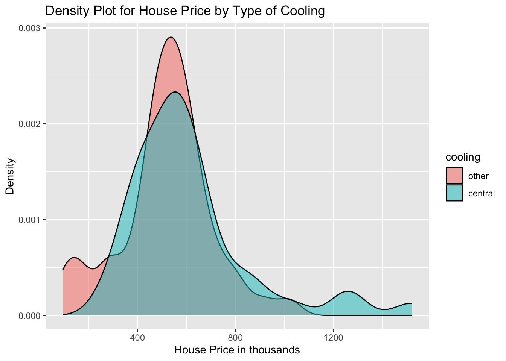
Exercises
Instructions:
Create a new quarto document and save it as lab_04_Exe. As for the title, use
Data Visualization with ggplot2 Exercises. Write your name under theAuthorfield. Change the output option topdf.Delete everything on the page except the YAML. Then, load the
openintroandtidyversepackages. Make sure to useinclude=FALSEin the code chunk for packages.Copy and paste each question into the document and have a code chunk below the question if it needs code to answer.
Once you are done, render your document to PDF and submit the pdf on Canvas.
Questions:
(2 pts) There is a data set called
loan50contained in theopenintropackage. Load the data set into your quarto work space. Run the query?loan50in the console to learn more about the data then give a brief description of the data set. List any two categorical variables and any two numerical variables in the data set.(4 pts) Create a simple bar plot to visualize the distribution of the variable
loan_purpose. Based on your bar plot, what is the most frequent reason for which people in the sample took loans? What is the least frequent reason(s)?
NOTE: You may want to flip the coordinates to have the bars along the y-axis instead of the x-axis. This will provide more space for all categories to appear.(4 pts) Create a dot plot to visualize the distribution of the variable
loan_amount. Comment on the distribution.(4 pts) Suppose we want to answer the question, “do people with higher
total_incometend to have higherloan_amount?. Create a scatter plot to visualize the relationship betweenloan_amountandtotal_income. Describe this relationship.(4 pts) Create a new scatter plot that colors the dots on the scatter plot in question 5 above using the categorical variable
has_second_income(i.e., whether someone has a second income or not). Comment on the new scatter plot.Create a contingency table to summarize the counts of the variables
loan_statusandhome_ownership. Comment on this table. Please look up how to create a contingency table in R using thetidyverseworkflow.